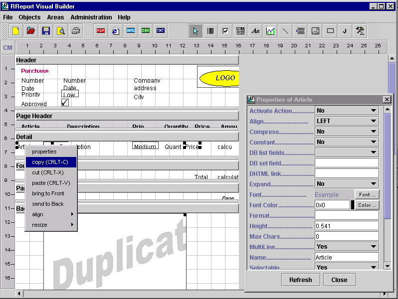

RReport will assist you in the task of creating reports for you Java [TM] applications. This report can use JDBC to access a database and retrieve the data to be printed. However this is only one of the possibilities, you can also programatically print the report and set the values yourself, or print data from XML file, array or JTable.
The product is made of:
Note: the present document covers RReport Visual Builder which uses the RReport library. It is assumed that the reader has some background about the RReport package. Please read also RReport Documentation .
RReport Visual Builder requires Swing. The runtime version (RReport) however does not require Swing. If you are however developing a Swing application you can use a Swing preview Window (RReportJWindow).
Both, the builder and the runtime version will run with the Java Platform 1.1
or newer.
In order to distribute your application that includes reports you must distribute the following package:
You DO NOT need to distribute:
In order to run the Builder and start designing your reports you need to execute the following commands:
or you can just run the batch file runSUN.bat respectively.
If Swing.jar is not available in your computer, you can download it from the following locations:
Note: JDK 1.3 and later do not require any additional Swing file since it is included in the Java runtime.
The screen of the builder is very simple, it has three main parts:
The menu allows the following operations:
Futhermore the toolbar will allow you to perform this operations (buttons from left to right):

screenshot 1
The report is divided into areas. An area is a section in a report that contains objects that will always be printed together. There are several types of areas:
By clicking on the name of the Area its properties will be displayed in the properties window.
The properties window
The properties window will display the properties of the selected object, area or report. Click on refresh if you want to see the result of the modified properties.
Working with objects
Adding a new object
In order to add a new object you must select the appropiate object in the toolbar and click on the area you want to add the object. Select the first button in the tool bar (the one with the pointer) in order the deactivate the current selection.
Selecting one or more objects
Click on the objects in order to select them. Selected objects show four black squares on the corners. In order to select more than 1 object you must press the SHIFT key and click on the objects.
Deleting objects
Use the CTRL-X or DEL in order to delete selected objects
Moving objects
Move selected objects by dragging and dropping them.
Resizing objects
Move the cursor to the right or the bottom border of the objects in order to resize them. The cursor will the will change and you can drap the border of the object.
Copying objects
Copy selected object with CRTL-C and paste themin the curret area with CRTL-V. You can also use the menu items in the Objects menu or in the popup menu.
Aligning objects
Select the objects you want to align and click on the right button of the mouse. Select then the alignment type from the popup menu.
Bringing object to the front or to the back
you can determine the order in which objects are printed by bringing them to the front or the back. Select the objects you want to move and click on the right button of the mouse. Select then the action (bring to front or send to back) from the popup menu.
Description of the supported objects
Report
Select File-> Properties to set the properties of the report. The properties are:
- Background: background color.
- DB Active: when you select YES, the database will be opened. Make sure you enter the database information first (user, url, password and driver).
- DB Driver: (optional) jdbc driver. if empty the ODBC bridge will be used.
- DB Password. (optional)
- DB Url: if you use the ODBC-Bridge you must enter the name of your ODBC entry. If you use another driver you must read the user manual of the driver.
- DB User. (optional)
- Frame: if true, the report will have a frame around the page.
- Frame color.
- Frame Style.
- Frame Width.
- Margins: in centimeters.
- Orientation. You can set here that the report should be printed in landscape (horizontal) format. Note that the user will still need to select the page orientation from the print dialog, specially if you use jdk 1.1. See RPrintSetupJDK13 if you use jdk 1.2 or jdk 1.3.
- Name: name of the report
- PDF File: file name for pdf output. Click here to learn how to install the PDF features.
- Text Mode: You can use this field to enable text mode printing. Click here to learn mode about text mode printing.
- Text Mode columns: number of columns in text mode printing.
- Text Mode rows: number of lines in text mode printing.
- Text printer: use PRN: for a local windows printer or the printer name (//server/printename) for a network printer. If you use Linux you can use /dev/lpr or any other printer file.
- Text Printer type: select the command set supported by your printer.
Area
Click on the area's name to set the properties of the area:
- Background: background color.
- Columns (default is 1). Set this value to greater than 1 if you want RReport to print the area in several columns.
- Name: name of the area
- Frame: if you select AREA there will be a border for each repetition of the area, if PAGE there will be only one border for all areas in the page.
- Frame color.
- Frame Style.
- Frame Width.
- Grid: list of positions (CM) of the columns (vertical lines). This is used to draw a grid in the area. After each repetition a horizontal Line will be draw.
- Grid color.
- Grid Style.
- Grid Width.
- Group by. List of fields of the data source (normally a database) you want to group by. The fields must be separated by |. This property is only available in the detail section of the areas groups. Your data source must provide the data grouped and sorted (if you use a database you can use the GROUP BY and the ORDER BY sql statements). RReport will print the group header and footer for each new value of the "group by" field/s but it will not reorganize or sort the data in any way.
- Header Area: If the current repetition of the area cannot be printed in the current page, a new page is created. The header area will be printed in the new page before the current area.
- DB Link from: list of fields for the link (separated by "|" ) in the super area. This is used to make a link between two areas/tables in order to have a nested area. Only needed this area is nested in a superarea.
- DB Link To: list of fields for the link (separated by "|" ) in this area. This is used to make a link between two areas/tables in order to have a nested area.Only needed this area is nested in a superarea.
- DB Super Area: super area. The current area will be printed for every repetition of the super-area. The correct registers from tha table will be read using the "link from" and "link to" fields.
- DB list Tables: list of available tables in the database. The property "DB Sel Table" will be updated automatically when you select a table from the list.
- DB sel Table: name of the table in the database used as RJDBCSource for the area. It can also be a SQL select statement. The SQL statement may contain parameters like for example: "select * from Table where ID=[%param1]". RReport Visual Builder will ask for the parameter when you run the report. In this case don't forget to use RJDBCSource.setParameter() when you run the report from your java application.
- Export: you can use this field to keep this area from beeing exported in xml or csv mode.
- Test Repetitions: (only for testing purposes) number of repetitions of the areas you want to create when printing or previewing from RReport Visual Builder.
- Xml File: If you want to use a xml file as data source, enter the name here. If the area is linked to a super area using the "DB Super area" field, you can leave this field empty. In this case the same xml file used for the super area will be used as data source for the sub area.
- Xml Node: (if using a xml file as data source) This is the XPath to the Node in the xml file. RReport will create a repetition of the area for each node in the xml file. If the area is linked to a super area, the Xpath must be relative to the xpath entered in the super area.
Note: if you use parameters in the SQL statement, the "DB List Fields" in the RVObjects will not be filled. For this reason you should first enter a sql statement or table name. This will load the list of fields "DB List Fields", then you can add the parameters.
RVObject
This object corresponds to the RObject object used in RReport. Itsproperties are common for all the object used in report. The properties are:
- X and Y: position in the report (CM).
- widht and Height: size of the object.
- Constant: if true the object is supposed not to modify its content during report printing. For example, in the case of database access, this object would not be read from the table.
- Name: name of the object.
RVField
This object corresponds to the RField object used in RReport. It is used to print texts and its properties are:
- Align: text alignment.
- Compress: see text wrapping.
- DB List Fields: list of field in the table. When you select on the property "DB sel Field" will be updates.
- DB sel Field: you can enter here the name of the field in a database used as data source for this object.
- Expand. see text wrapping.
- Evaluate: set it to "No" if you want to disable the evaluation of expressions (Values starting with = are assumed to be expressions, for example =3+5 will print 8).
- Font: font of the text.
- Font Color: color of the font of the text.
- Format: Format string used for dates and numbers.Examples: "dd/MM/yyyy" for a date or "#####.00" for a number. Dates a formatted using the java.text. SimpleDateFormat and numbers using the java.text.DecimalFormat.
- Multiline: if true the words the text will be printed in several lines if needed.
- Value: default value.
- XPath: (if using a xml file as data source) xpath to the data source for this field. The path must be relative to the XPath of the node in the area's properties.
RVCheck
This object corresponds to the RCheck object used in RReport. It is used to boolean values and its properties are:
- DB List Fields: list of field in the table. When you select on the property "DB sel Field" will be updates.
- DB sel Field: you can enter here the name of the field in a database used as data source for this object. You must select a field of type "boolean".
- Value: default value.
RVCombo
This object corresponds to the RCombo object used in RReport. It is used to display values based on the value of a key, its properties are:
- Align: text alignment.
- DB List Fields: list of field in the table. When you select on the property "DB sel Field" will be updates.
- DB sel Field: you can enter here the name of the field in a database used as data source for this object.
- Font: font of the text.
- Font Color: color of the font of the text.
- Key: font of the key.
- Key Color: color of the font of the key
- Key List: list of key separated by "|" .
- Print Key: if true the key and the value will be printed.
- Format: Format string used for dates and numbers.Examples: "dd/MM/yyyy" for a date or "#####.00" for a number. Dates a formatted using the java.text. SimpleDateFormat and numbers using the java.text.DecimalFormat.
- Multiline: if true the words the text will be printed in several lines if needed.
- Value: default value.
- Values List: list of values separated by "|".
RCombo support also a list of images aqs values to be printed but RVCombo only support a list of strings. If you want to specify a list of images you should do it programatically when you run your report. For example:
report.importFile(filename);
RCombo combo=(RCombo) report.getAreaByName(areaname).getItemByName(comboname);
combo.Values=listOfImages;
RVPicture
This object corresponds to the RPicture object used in RReport and is used to print images. Its properties are:
- Image: the image file (gif) must be located at com.java4less.images.
RVLine
This object corresponds to the RLine object used in RReport. Its properties are:
- Direction: select HORIZONTAL to draw a horizontal line, VERTICAL to draw a vertical line, USER_DEFINED1 to draw a line from top left corner to the bottom right corner and USER_DEFINED2 to draw a line from bottom left corner to the top right corner.
- Line Width.
- Style.
RVPageBreak
The RPageBreak will force that a page break after the area is printed.
RVRectangle
This object corresponds to the RRectangle object used in RReport. Its properties are:
- Fill: if false the rectangle will be transparent. Make sure you send the rectangle to the background if you select fill=true.
- Fill Color.
- Style: line style for the border.
- Line width: width of the border.
RVUserObject
This object corresponds to the RUserObject used in RReport. It is used for printing your own RObject.
Class name: the name of your own RObject subclass. The class must be in the com.java4less.rreport package.
RVBarcode
This object will insert a barcode in your report. Note that a separater license of RBarcode is required if you want to print barcodes. RReport includes a evaluation version of RBarcode.
The parameters of the barcode are explained in RBarcode's documentation.
RVGraph
This object will insert a chart in your report. Note that a separate license of RChart is required if you want to create charts. RReport includes a evaluation version of RChart.
This object only requires 1 parameter, the "Data File" that contains the chart parameters. This file is created using RChart Visual Builder.
RVUserComponent
This object is used to include a JComponent in your reports. When you insert a RVUserComponent in your report, a JLabel is displayed. In order to display your own JComponent (for example JEditorPane) you must set the rusercomponent.setruntimeValue(), for example:
JTextField component=new JTextField("Test"); // create own JComponent
// set JComponent in RUserComponent
((RUserComponent) report.getAreaByName("areaname").getItemByName("RUserComponent1")).setruntimeValue(component);Note that the component must fit in one page (ie, you can print a large component like JEditorPane but you must make sure it will not exceeds the limit of the current page).
Evaluation of expressions
RReport can also evaluate expressions you enter in the "value" property of the RVField objects. Any value starting with "=" is assumed to be an expression to be evaluated unless you set the "evaluate" property of the RVField to "No".
Examples of expressions are:
- =5+1+1 will be printed as 7
- =((5+1)*2) will be printed as 12
- =[areaname.fieldname] * 2 will print the value of the referenced field of the referenced area multiplied by 2.
- =[fieldname] * 2 will print the value of the referenced field (of the current area) multiplied by 2.
- =sum("total") will sum the values of the "total" field in a group. Note that this function and other (avg, min, max) can only be applied to groups and therefore can only be used in the group footer.
- =(trim(" hell ") & "o") will print "hello".
Supported operators are: + , - , / , \ (integer division), ^ (power), *, % (modulo) and & (concatenation of strings).
Supported functions are:
- round(double): round decimal value.
- trunc(double): truncate decimal value.
- mid(string,init,length). Extract substring.
- left(string,len): Extract substring starting at possition 0.
- right(string,len): Extract substring starting from the end of the string.
- trim(string): remove leading and trailing blanks.
- rtrim(string): remove trailing blanks.
- ltrim(string): remove leading blanks.
Supported functions for group footers are:
- sum("fieldname")
- avg("fieldname")
- min("fieldname")
- max("fieldname")
You can implement your own functions using the IUserFunctions interface and setting the Evaluator.userFunctions property. For example, the following code would implement the "charAt" function that extracts a given character froma string.
class myFunctions implement IUserFunctions {
public Object executeFunction(String functionName,Object[] parameters) {
// implement charAt function which have 2 parameters: String and possition of the char to return
if (functionName.compareTo("charAt")==0)
if (parameters.length==2) {String s=parameters[0].toString();
String positionStr=parameters[1].toString();
int position=Integer.parseInt(positionStr);if (s.length()>position) return ""+s[position];
}return new String("");
}
}
Note that user defined functions are only executed within your java application. When testing the report inside RReport Visual Builder, user defined functions will be ignored.
Using a database
In order to retrieve data from a database you must:
- Enter the connection data in the Report's Properties
- Database URL: if you use a ODBC connection just enter the DSN here (see your ODBC administrator). If you use a JDBC native driver you should read the documentation on the driver to know the format of the url.
- Database user. If needed.
- Database password.If needed.
- Activate the database connection. Select YES in the DB Active combo box.
- Enter the table name or the SQL query in the Area's Properties (see DB Sel Table property). Each area will retrieve data from a table in the database. You can also have nested areas. In this case you must select a "linked Area" (super area) and enter the "link from" (fields in the supertable) and "link to" (fields on the subtable) information in the nested area (subarea). The "link from" and "link to" are list of fields separated by "|" that build the foreign key relationship between tables/areas.
- Enter the field name in the Object's properties. The following object support database access: RField, RCheck and RCombo.
Using a xml file as data source
In order to retrieve data from a xml you must:
- Enter the file name in the "XML File" property of the area. All subareas of this area will use the same data file as source
- Enter the Xpath to the node in "XML Node" property of the area. The path must be relative to the XPath of the superarea's node, or to the root node if the area does not have a superarea.
- Enter the XPath in the "XPath" property of your report's fields. This path must be relative to the XPath of the area's node.
See example in directory examples/XMLSource/xmlorder.rep
Note: this feature requires you to copy xalan.jar, xml-apis.jar and xecesImpl.jar to the RReport's directory. These files are part of the Apache Xalan package.
Running the report
The following code will run the report DBorder.rep:
import java.awt.*;
import com.java4less.rreport.*;
public class exampleDBOrder extends Frame implements RAreaListener {
int total=0;
public static void main(String[] args) {
exampleDBOrder f=new exampleDBOrder();
f.setVisible(true);
f.init();
}public void init()
{ // load report from file, this will also open the database connection to the ODBC Datase Source RReport
RReportImp report=new RReportImp(this);
// if you use jdk 1.2 or later you can use the Java 2 printing api:
// RReportJ2 report=new RReportJ2(this);
if (!report.importReport("DBorder.rep")) System.exit(0);// set the images for the combo box. This can only be done programatically
java.awt.Image[] comboImages=new Image[3];
comboImages[0]=new RImageFile("ball1.gif").getImage();
comboImages[1]=new RImageFile("ball2.gif").getImage();
comboImages[2]=new RImageFile("ball3.gif").getImage();
((RCombo) report.getAreaByName("Detail").getItemByName("Priority")).Values=comboImages;// set listener to calculate amounts on the fly
report.getAreaByName("Detail").setListener(this);
report.getReportFooter().setListener(this);// create preview window
RReportWindow Win= new RReportWindow(report,this);
// you can also use the SWING preview window
//RReportJWindow Win= new RReportJWindow(report,this);
// this will print the Header Area and all dependent areas
report.prepare();
report.endReport();
Win.show();
System.exit(0);
}// Area Listener. This will be triggered for each repetition of detail and page footer
public void beforePrintingArea(RArea area) {
// calculate the amount of each line
if (area.getName().compareTo("Detail")==0) {
double price=((Double) area.getItemByName("Price").getruntimeValue()).doubleValue();
int quantity=((Integer) area.getItemByName("Quantity").getruntimeValue()).intValue();
total=(int) (total+(quantity*price));
area.getItemByName("Amount").setruntimeValue(new Integer((int) (quantity*price)));
}// set total amount
if (area.getName().compareTo("Footer")==0) {
area.getItemByName("Total").setruntimeValue(new Integer(total)); total=0;
}
}
}
The process is:
- The report is created by calling the constructor new ReportImp(frame). Note that you must use the class RReportImp or RReportJ2.
- load the report using importReport(file). This will also open the database (this example uses a ODBC data source called RReport that opens the database RReport2.mdb). Here you will find other examples that do not use database.
- Assigns the images for the combo box .
- sets the area listeners. This will be triggered for each repetition of detail and page footer.
- create a preview window if you need it.
- call prepare(). This will print the report header. The detail area will also be printed since it is a subarea of report header.
- call endReport().
Accesing loaded fields and methods:
In order to change the properties of object or area after loading a report from a file you must use the methods:
rreport.getAreaByName() and rarea.geItemByName().
for example. In order to change the image of a RPicture object you must call:
report.getAreaByName("areaname").getItemByName("RPicturename").setruntimeValue(Image)
note that if your want to access the headers, background or footers area you must use the rreport.getPageHeader(), rreport.getReportHeadert()...
Using your own database connection and statement for database access:
If your report uses a database, it will open the database connection when you execute the importReport() method. If you already have a database connection you can use your own java.sql.connection object in this way:
report.setDBCon(yourConnection);
report.importReport("filename");The importReport() method will also create all necesary RAreas and RJDBSource objects. The RJBCSource's constructor needs a java.sql.Statement object as parameter. This will be created by report.getDBCon().createStatement().
If you want to specfiy your own Statement you must call:
((RJDBCSource) report.getAreaByName(name).getDataSource()).setStatement(yourStatement);
This may be necessary if you use some SQL Server drivers that need a new database connection for each statement. Note that RReport creates all statement from the same java.sql.Connection.
If you want to change the sql statement at runtime:
((RJDBCSource) report.getAreaByName(name).getDataSource()).setSQL("Select * from Employees");
Programatically printing
If you do not use any RSource you must print the imported report programatically ba setting the values of the ovject in the area one by one and printing every single repetition with rreport.printArea(). Like this:
report.importReport(name);
myArea=report.getAreaByName(areaname);while (data to print) {
// set values for fields
myArea.getItemByName(fieldname1).setruntimeValue(value1);
myArea.getItemByName(fieldname2).setruntimeValue(value2);
.....// print repetition
report.printArea(myArea);
}See also exampleOrder2.java.
Using other RSources
In other to use other RSources (for example, printing a JTable) ,different from JDBC, you must import the report and set the new RSource:
report.importReport(name);
report.getAreaByName(areaname).setDataSource(yourRSource);See also exampleOrder.java for an example with a RArraySource.
Combining RSources and programatically printing
If you use a RSource object to print all repetitions of an area automatically but you still need to set a field value programatically your must use a RareaListener.
Creating your own RVObjects
Once you have created your own RObject, you can create a RVObject for it. RObject are the printable object while RVObject are the visual objects you see in RReport Visual Builder.
The steps to create your own RVObject are:
- create your own class extending RVObject . For example, if we take the RTriangle object from RReport user manual we would now create a class called RVTriangle.
- the new class must be located in the package com.java4less.rreportVB. In our example com.java4less.rreportVB.RTriangle.
- in order for RReport Visual Builder to load the new class you must create a text file called RVTriangle.txt and put it in the Objects subdirectory. This .txt file must contain a short (2-3 words) text that will be used as tip in the toolbar.
- in order to assign an icon for the object in the toolbar of RReport Visual Builder you must have a 16x16 pixels gif file called RVTriangle.gif and this image file must be located in the package com.java4less.images.
Click here (RVTriangle.java) to see the necesary code to create the RVTriangle class.
After examining the source code you will note that:
- You must create a RTriangle object in the constructor and assign it to the protected field robject.
- Properties that should appear in the properties window of RReport Visual Builder must be named using the format getPropXXXX() and setPropXXXX(), where XXXX will be the name of the property. The properties window support the following data types: int , double, boolean, String, RImageFile, RFile, Color and Font.
- If you have a int or String property you may also provide a list of values by creating a method called " String[] getListXXX()". This mehtod must return a list of strings that will be used to create a combo box.
- You can also implement a exportFile() function that will be called when the report is saved to a file. You must the save each property of your class in a file, where the format is: "FIELD =VALUE", where FIELD must be 8 characters long (you can use trailing spaces if necesary).
- You can also implement a the paint() method to draw the object yourself. You must then call the super.paint(g) because RVObject is responsible of drawing selected objects. The protected fields "drawBorder" and "drawName" will let you specify if RVObject should draw a frame around the object and its name.
- You must program a cloneFields() method that will be called when the user uses CRTL-V in order to copy objects. The parameter of the function is the new created object whose field you must set here.
Examples
The following examples are delivered with RReport Visual Builder:
- examples/jdbcSource/DBorder.rep. This example is the design of a purchase order. In order to test the example you must create a ODBC Data Source called RReport for the MSAccess database RReport2.mdb.
- examples/arraySource/Order.rep. This is the same report as above but it does not use a database.
- examples/labels/labels.rep. This report prints areas in 3 columns.
- examples/groups/Groups.rep. Example of use of groups and expressions with database. In order to test the example you must create a ODBC Data Source called RReport for the MSAccess database RReport2.mdb.
- examples/Chart/chart.rep: report with chart.
- examples/PDF_DHTML: exporting to PDF and DHTML.
- examples/XMLSource: XML File as data source.
You can import the the *.rep files in RReport Visual Designer with File->load menu.
In order to run the examples the following files a provided:
- examples/jdbcSource/exampleDBOrder.java. Uses the report definition file DBorder.rep in order to print the report. You can run this example by executing runExampleRBOrder.bat.
- examples/arraySource/exampleOrder.java. Uses the report definition file Order.rep. It uses an array as data source for the report. runExampleOrder.bat
- examples/printByProgram/exampleOrder2.java. Uses the report definition file Order.rep. It programatically prints the report. runExampleOrder2.bat
Java and all Java-based marks are trademarks or registered trademarks of Sun Microsystems, Inc. in the U.S. and other countries